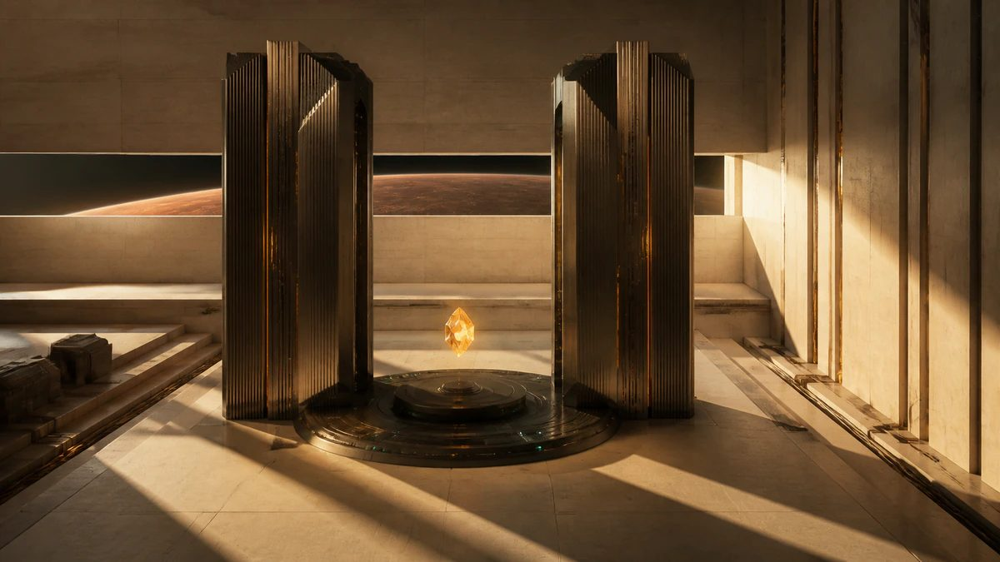
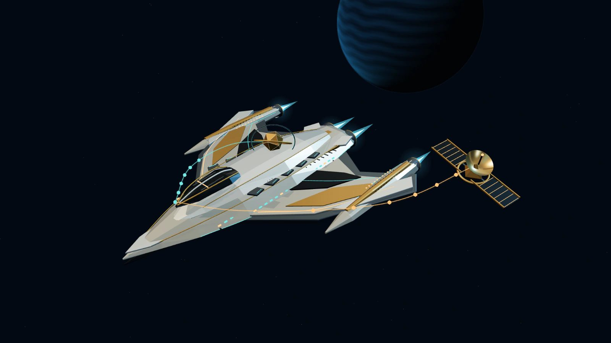
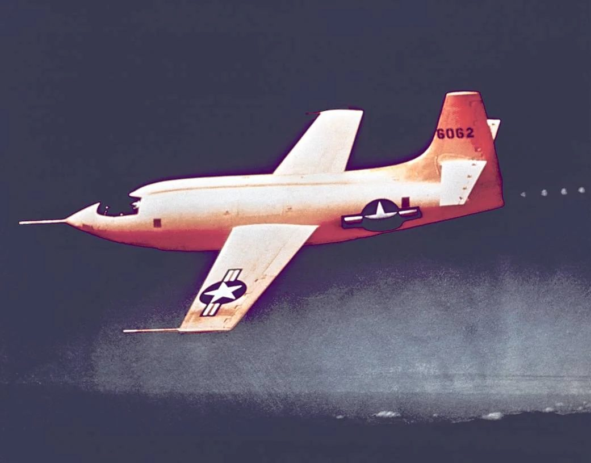
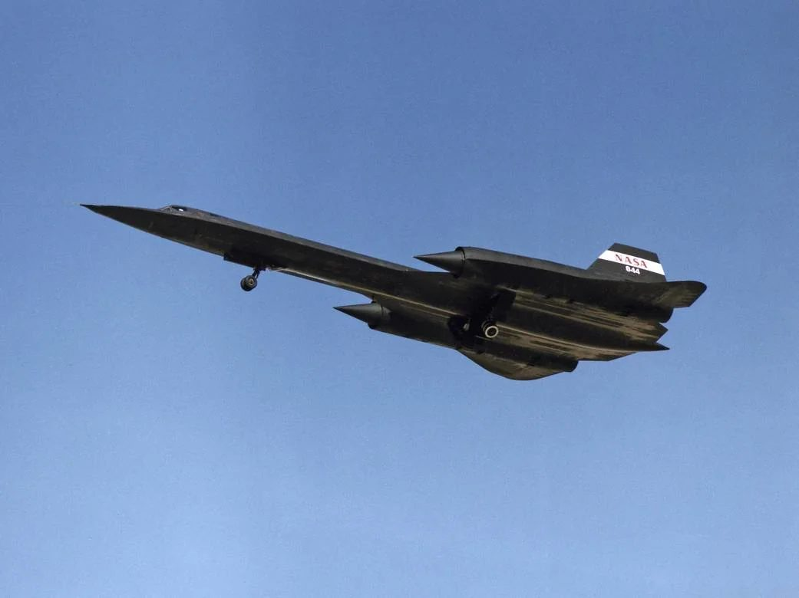
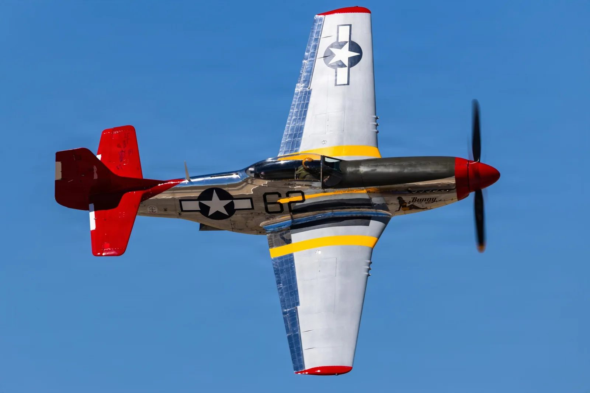
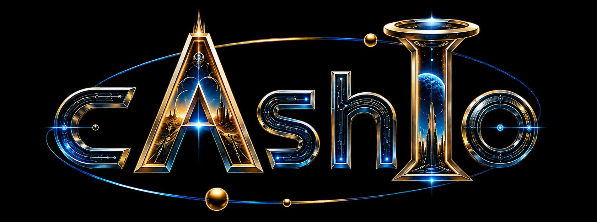

DOUG CASHIO / PRINCIPAL SOLUTIONS CONSULTANT / PENSACOLA
Own the iron.Shape thepossible.
I build local AI and security systems that put privacy and human judgment first. Your data. Your budget. Your call.
I build local AI and security systems that put privacy and human judgment first. Your data. Your budget. Your call.
One document. The same task. Now change its privacy boundary. Predict the route, then test the rule yourself.
Analyze a document and require sources. Now make that document private.
I reserve the more capable route for work that needs it.
Route a draft. Require sources. Then add private information.
Choose a task and its boundaries, then run the five-step demonstration. No request leaves this page.
Zeus and Apollo are the hardware I own and operate. HERMES runs the scheduled work; the DeepSeek Harness is my operator console. I remain accountable for the decisions.
Select a node to see its role and the evidence behind it.
The latest audit did not establish a current lane inventory or execution record. This atlas illustrates the design relationships; the HERMES study lets you explore a browser-only routing model.
Audit · September 7, 2026 · routing withheld
Step aboard. Open the hull. Trace twelve AI requests. Cut the cloud link. See what stays with you.

Owned compute lives inside the ship. Its AI bay represents hardware you operate. In this model, it can handle all twelve requests onboard, even without a cloud connection.
The separate orbital relay represents an external cloud provider. A request must leave the ship to reach it. Private requests also need explicit permission in Cloud mode.
Bit, the gold core, marks human authority. You choose the architecture and grant permission. A held request waits here for an approved route; it never leaves silently.
6 requests stay local; 6 public requests use the cloud. Sensitive data stays on your hardware.
Sensitive requests always stay local. Only public requests may use the cloud.
Cloud routing needs a connection; this model also supports local fallback.
Turn the instrument. Choose a principle. See the design decision behind it.
Separate what is known from what is assumed. A useful system makes its evidence visible before it asks for trust.
Ask E.V.E. what was observed and what remains unknown. Running guests do not establish application health, recovery or failover readiness.
The question was simple: what is running, and what can this page prove? Three owner-run, read-only observations answer it: August 28, 2026 (archived export), September 7, 2026 (HERMES audit) and September 18, 2026 (DeepSeek Harness, direct reads on both nodes). The archived routing inventory has its own date: August 21, 2026.



The future rewards imagination. Flight teaches you to prove it.
The first supersonic flight was a test card flown to the letter and a report that said exactly what happened, cracked ribs and all. Doug Cashio applies the same discipline: run the check, record the result, and never let the story get ahead of the data.
A working principle inspired by this lineage, not a historical quotation.Endlessly curious. Personally accountable.
Principal Solutions Consultant.
Independent systems builder.
I make difficult system choices understandable: where AI runs, what it can use, and when a person takes over. This is my independent workshop: hardware I operate, tools I build, and evidence you can inspect. Science fiction supplies the imagination. Flight-test discipline keeps it honest.

Tell me what you want to build and your hardest constraint. AI spending, private data, or a system that needs to be easier to understand: start there.